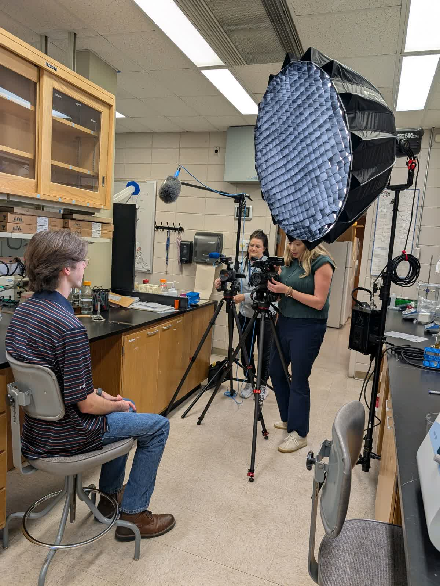
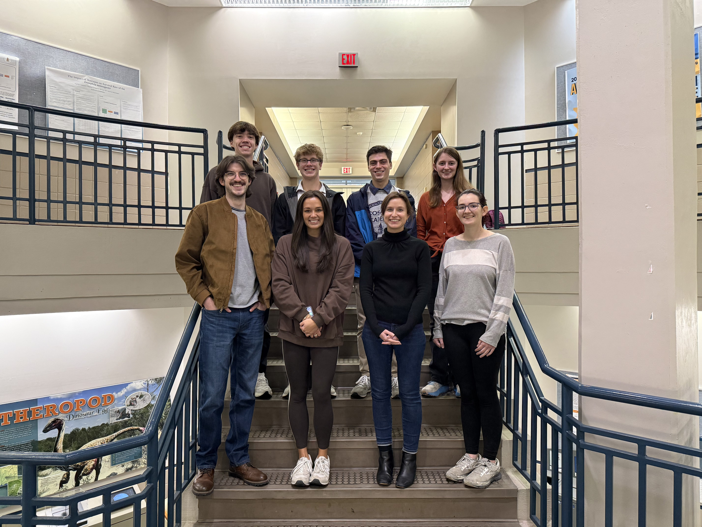
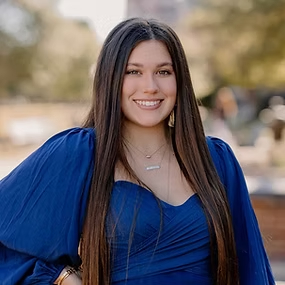
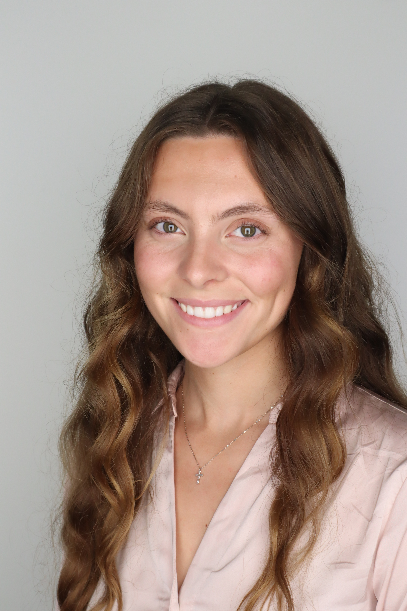
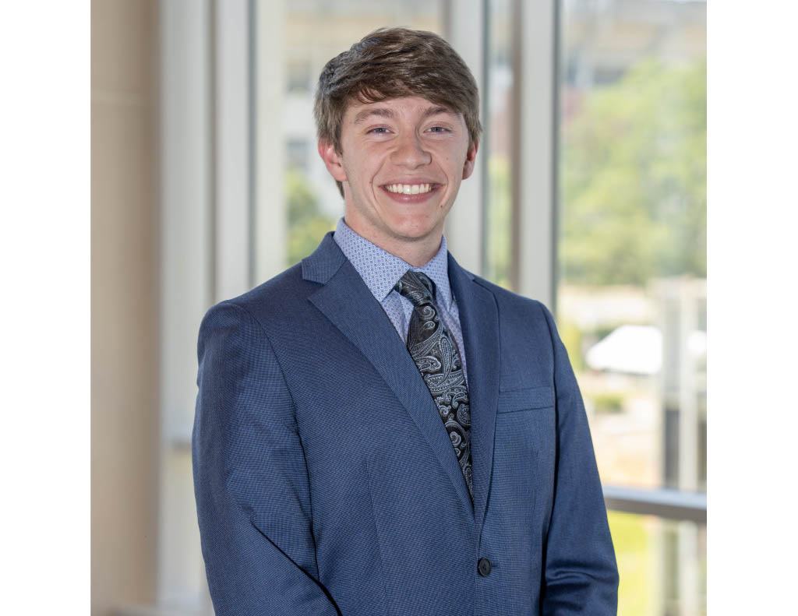
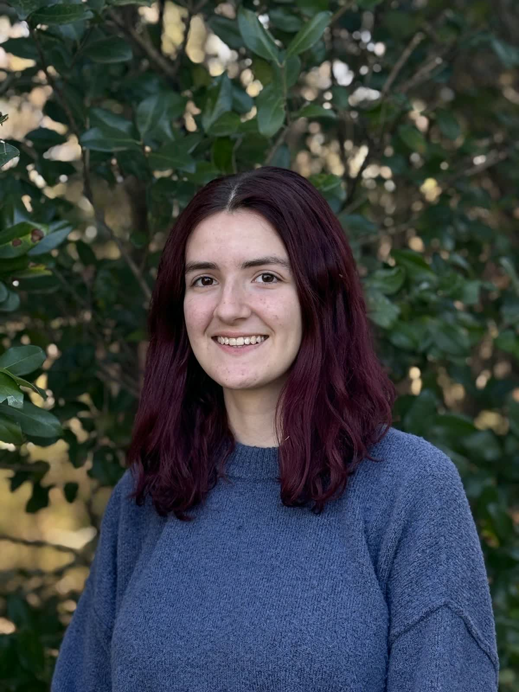

Fall 2025
Pierce Meinert Featured in Undergraduate Research Video
Gibbs Lab alumnus Pierce Meinert was featured in Auburn’s Undergraduate Research Fellowship promotion highlighting undergraduate research.
Watch on YouTubeExploring the tiny world of microbes through education and research in molecular microbiology
We study how microbes adapt to environmental stress through changes in ribosomes, translation, gene regulation, and hands-on undergraduate research.

We investigate how environmental conditions, such as metal availability and nutrient stress, reshape ribosome biogenesis and translation across diverse microbes. By studying soil-dwelling bacteria, we aim to understand how differences in environmental adaptation drive variation in growth, survival, and gene expression at the level of the ribosome.
Our work uncovers the molecular mechanisms that control ribosome assembly and translational regulation. Using model systems like E. coli and budding yeast, we study ribosome-associated factors and poorly characterized genes that help cells reprogram gene expression in response to stress.
We design and implement course-based undergraduate research experiences (CUREs) that engage students in authentic, discovery-driven science. In BIOL 4101, students investigate gene regulation and stress responses while developing experimental and analytical skills. In parallel, we conduct education research to evaluate how CURE design influences student learning, scientific reasoning, and identity.

Principal Investigator
My career in microbiology began at Miami University in Ohio, where I studied pathogenesis in Mycoplasma. I earned my PhD from Ohio State University, focusing on the role of translational GTPases in ribosome assembly. I completed two postdoctoral fellowships at NIH and UCLA as an IRACDA fellow. Throughout my career, I have taught courses in microbiology, biochemistry, and biology at Wittenberg University and California State University, Los Angeles. I am broadly interested in microbial adaptation to nutrient stress, genetic regulation, and ribosome assembly and function. I started my position as Assistant Research Professor in January 2024.
Undergraduate Researcher
My name is Pierce Meinert, and I’m from here in Auburn, Alabama. I’m currently majoring in Microbiology with a specific interest in environmental microbiology and bioremediation. I joined the lab spring 2024, and it has been such a great experience! My future plans include attending a graduate program to continue researching and learning about these topics and eventually receive my PhD in environmental microbiology. War Eagle!

Undergraduate Researcher
My name is Tieran Sullivan and I am from Davidson, North Carolina. I am a rising Junior at Auburn and I am pursuing a concurrent degree in Biomedical Sciences and History. After college, I hope to go onto med school and pursue my dream of becoming a doctor. I have been working with Dr. Gibbs and her lab for a little under a year now. In our lab, I am working on a new project I created that studies interactions between probiotics and resident gut bacteria.

Undergraduate Researcher
My name is Nathan Newman and I am from Billingsley, Alabama. I am starting my first year at Auburn university where I'm pursuing two four-year degrees—Microbiology and Genetics—and I plan to continue my education by getting a PhD from either UAB or Auburn after graduation. My first exposure to this field was a general microbiology course I took during the Spring 2025 semester while in high school. I am interesting in secondary metabolite pathways certain bacteria utilize when stressed, and I am currently working on the antibiotic discovery project with Isabelle and Nathan (the other one). I look forward to learning all I can in this lab to prepare myself for the journey ahead. War Eagle!
Undergraduate Researcher
My name is Mary Przybysz and I am from Birmingham, AL. I am a senior double majoring in Spanish and Microbiology! After I graduate Auburn, I plan to go to medical school. I am so excited to be a part of the lab this year and learn as much as I can. I am thrilled to work alongside the team and getting involved with research.
Undergraduate Researcher
I’m a senior Biomedical Sciences student from Huntsville, Alabama with interests in both computational biology and microbial stress responses. I joined the lab in Spring 2024, where I characterize bacterial soil isolates and their responses to metal toxicity. I am also developing a custom-trained YOLO-based computer vision model for bacterial colony detection and counting. My future goals are to attend medical school and pursue academic medicine.

Undergraduate Researcher
I am a junior from Lexington, Kentucky, majoring in Biomedical Sciences with a minor in Spanish. I joined the Gibbs Lab in the spring of 2025, where I work on a project studying the antimicrobial activity of soil isolates. In this lab, I have enjoyed growing my knowledge of microbiology and developing new research skills. I look forward to continuing my work in the lab in the coming semesters. After college, I hope to pursue a career in medicine and help underserved populations.
Undergraduate Researcher
My name is Liam Brown, and I am a first-semester freshman from Spanish Fort, Alabama. I am beginning my major in Biomedical Sciences this fall. After my undergraduate studies, I plan to go to medical school, aspiring to become a surgeon in some capacity. I’m really passionate about microbiology and all sciences, and I love learning new things, especially in the lab. I recently joined Dr. Gibbs’ lab, and I’m extremely excited to conduct research and gain experience.

Undergraduate Researcher
As a junior pursuing concurrent degrees in Biomedical Sciences and Philosophy, I had the pleasure of taking Dr. Gibbs's Cell Biology class last spring. I soon became fascinated by the potential for discovery in such tiny cells. This fall, I will be studying ribosomal adaptations under various stresses while continuing to explore my interest in bioethics through my philosophy coursework. I hope to apply this experience in my future career, ideally in a research-focused setting upon graduation.

Undergraduate Researcher
My name is Nathan Watkins, and I am from Birmingham, Alabama. I am currently a senior at Auburn University studying Biomedical Sciences, with plans to attend medical school after graduation. I joined Dr. Gibbs's lab in the spring of 2026, where I assist with research focused on antimicrobial resistance and antibiotic discovery. I am excited to continue contributing to this important area of research while developing the scientific knowledge and laboratory skills that will support my future career as a physician.

Undergraduate Researcher
My name is Amelia Poirier and I am a sophomore majoring in Microbiology and Science Teaching! I am from New Hampshire originally but lived in Birmingham, AL for several years before beginning my studies here at Auburn. This is my second semester working in Dr. Gibbs lab and after my undergraduate degree, I plan to attend graduate school.
Former lab members and the semester they were with the Gibbs Lab.
Liu Y, DeMario S, He K, Gibbs MR, Barr KW, Chanfreau GF.
Gibbs MR, Chanfreau GF.
Gibbs MR, Moon KM, Warner BR, Chen M, Bundschuh R, Foster LJ, Fredrick K.
Updates from the Gibbs Lab including new members, graduations, and conference presentations.

Gibbs Lab alumnus Pierce Meinert was featured in Auburn’s Undergraduate Research Fellowship promotion highlighting undergraduate research.
Watch on YouTube
Congratulations to Gracie for graduating with her Bachelor’s degree!

Dr. Gibbs presented the lab’s latest research at the American Society for Microbiology conference.